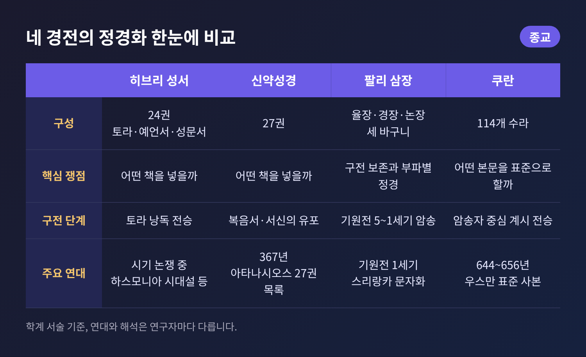
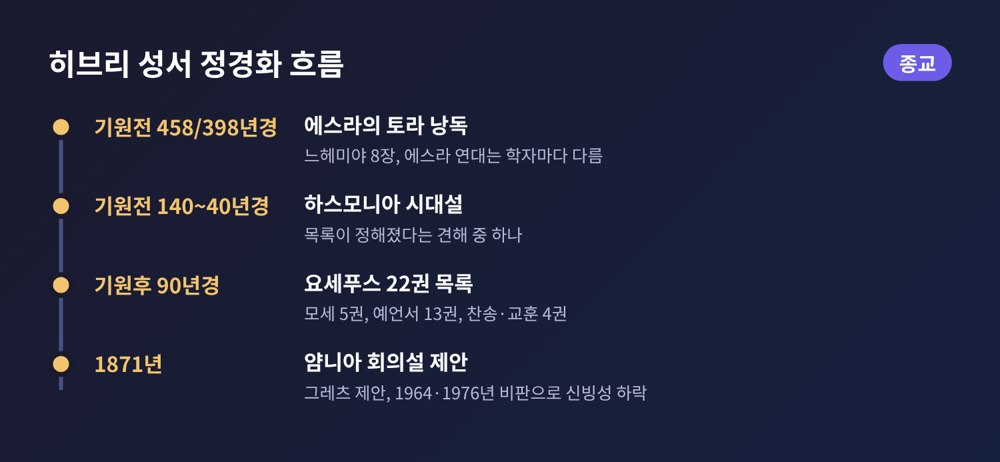
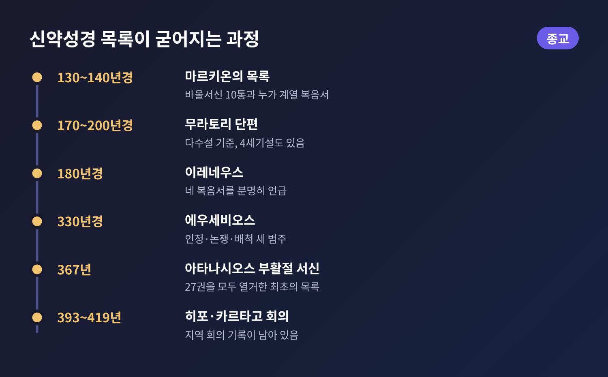
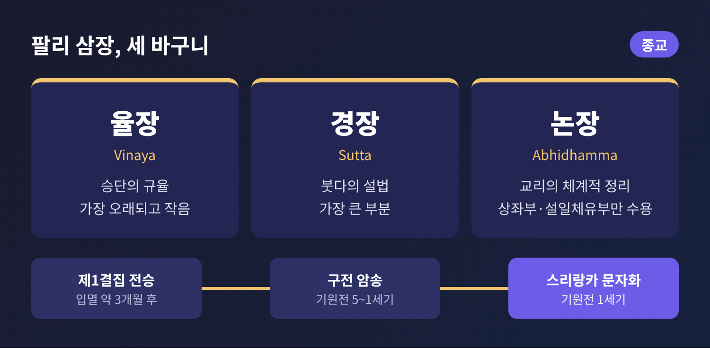
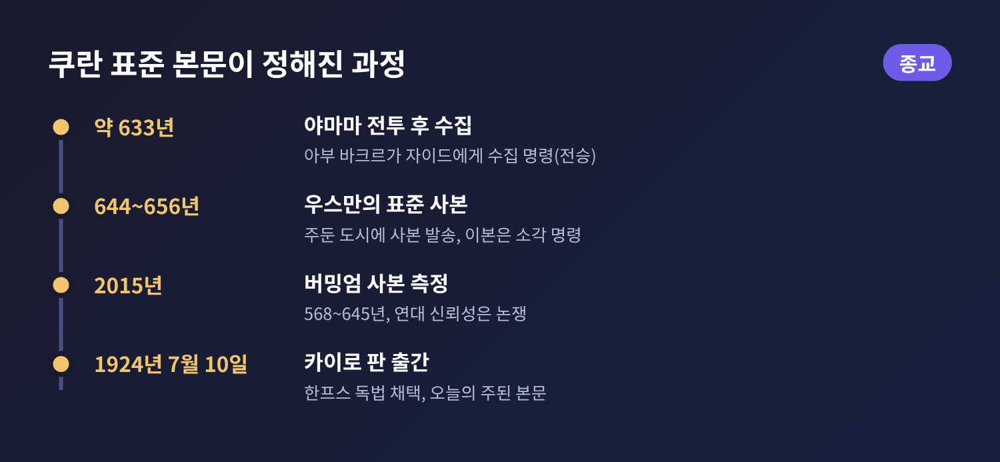

오늘은 정경(canon)이 만들어지는 과정을 비교종교학의 눈으로 살펴보려 합니다. 정경은 한 공동체가 경전으로 인정한 책의 목록을 뜻하며, 그리스어 '카논(kanon)', 곧 잣대에서 온 말입니다. 히브리 성서, 신약성경, 팔리 삼장, 쿠란이 각각 어떤 길을 거쳤는지 학계의 설명을 중심으로 비교합니다. 어느 전통이 옳은지를 가리는 글은 아닙니다.
네 경전은 모두 처음부터 완성된 한 권의 책으로 주어지지 않았습니다. 구전이나 낱낱의 문서로 시작해 오랜 시간에 걸쳐 목록과 본문이 굳어졌습니다. 다만 쟁점은 달랐습니다. 성서에서는 어떤 책을 넣을 것인가가 문제였고, 쿠란에서는 어떤 본문을 표준으로 삼을 것인가가 문제였습니다. 팔리 삼장은 암송하는 공동체가 오랫동안 보존을 맡았습니다.

히브리 성서(타나크)는 토라 5권, 예언서 8권, 성문서 11권으로 모두 24권입니다. 개신교의 구약 39권은 같은 책을 더 잘게 나누어 센 것입니다.
대중적으로 알려진 도식은 이렇습니다. 토라가 기원전 400년경, 예언서가 기원전 200년경, 성문서가 기원후 100년경에 확정되었다는 것입니다. 토라의 경우 느헤미야 8장에서 에스라가 백성 앞에서 율법을 낭독하는 장면이 자주 언급됩니다. 에스라의 활동 시기는 기원전 458년경 또는 398년경으로 학자마다 다르고, 에스라가 토라를 편집했다는 주장부터 그의 사명 자체의 역사성을 의심하는 견해까지 합의가 없습니다.
성문서까지 얌니아(야브네)에서 열린 회의가 기원후 90년경 확정했다는 설도 오래 통용되었습니다. 1871년 하인리히 그레츠가 제안한 가설입니다. 그러나 1964년 잭 루이스, 1976년 시드 라이먼 등이 근거가 약하다고 비판했고, 지금은 크게 신빙성을 잃었습니다. 미슈나의 관련 구절은 아가와 전도서가 '손을 더럽힌다'는 논의를 전할 뿐, 어떤 책을 제외했다는 내용이 없기 때문입니다. 대안으로 하스모니아 왕조(기원전 140년경~40년경) 시기에 목록이 정해졌다는 견해가 있고, 더 늦은 시기로 보는 학자도 있습니다. 마크 츠비 브레틀러는 토라와 예언서 이후의 책들은 집단마다 권위를 인정한 책이 달랐다고 설명합니다.
기원후 95년경 요세푸스는 『아피온 반박』에서 모세 5권, 예언서 13권, 찬송과 교훈 4권을 합쳐 22권이라고 적었습니다. 그렇지만 이 목록이 모든 유대 공동체에서 통용된 것은 아니라는 지적도 있습니다. 사해 사본에서 에스더가 발견되지 않는다는 점도 당시 본문과 목록이 다양했음을 보여 줍니다.

신약의 27권은 한 번의 결정으로 정해지지 않았습니다. 기원후 130~140년경 마르키온은 바울 서신 10통과 누가복음에 가까운 복음서 하나로 자신의 목록을 만들었고 구약은 거부했습니다. 교회는 이를 이단으로 규정했습니다. 마르키온의 목록이 최초의 명확한 신약 목록인지, 교회 쪽 목록이 앞섰는지는 지금도 논쟁입니다.
1740년 루도비코 무라토리가 밀라노에서 출간한 무라토리 단편은 신약 책들을 열거한 라틴어 목록입니다. 다수 학자는 기원후 170~200년경으로 보지만, 4세기의 작성이라는 소수설도 있습니다. 이 목록에는 히브리서, 야고보서, 베드로전후서가 나오지 않습니다. 반면 베드로 묵시록이 들어 있고, 헤르마스의 목자는 읽되 교회에서 낭독하지는 말라고 권합니다.
180년경 이레네우스는 네 복음서를 분명히 언급했습니다. 하지만 같은 시기 타티아노스의 『디아테사론』, 곧 복음서를 하나로 엮은 책도 널리 쓰였습니다. 330년경 에우세비오스는 『교회사』에서 책들을 인정, 논쟁 중, 배척의 세 범주로 나누었습니다. 야고보서, 유다서, 베드로후서, 요한2서와 3서가 논쟁 중인 책이었습니다.
367년 알렉산드리아의 아타나시오스가 쓴 부활절 서신은 오늘의 27권을 모두 열거한 최초의 목록으로 알려져 있습니다. 이 책들에 '정경으로 정해진'이라는 표현을 쓴 첫 기록이기도 합니다. 이후 393년 히포 회의, 397년과 419년 카르타고 회의의 기록이 남아 있습니다. 그렇다고 이 모든 것이 곧바로 하나의 결론으로 이어진 것은 아닙니다. 4세기 시나이 사본은 바르나바 서신과 헤르마스의 목자를 함께 싣고 있고, 시리아 교회는 5세기까지 『디아테사론』을 사용했습니다.
구약에 해당하는 부분은 교파별로 더 갈립니다. 가톨릭은 1546년 트렌토 공의회에서 제2경전을 포함한 73권을 확정했고, 개신교는 66권을 사용합니다. 루터는 히브리서, 야고보서, 유다서, 계시록에 의문을 가졌지만 전통을 존중해 신약의 맨 뒤에 두었습니다.

팔리 삼장(티피타카)은 율장, 경장, 논장의 '세 바구니'로 이루어집니다. 율장은 승단의 규율, 경장은 설법, 논장은 교리를 체계적으로 정리한 부분입니다. 율장이 가장 오래되고 분량이 작으며 경장이 가장 큽니다.
전승에 따르면 붓다가 입멸한 지 석 달쯤 뒤 라자가하에서 제1결집이 열렸습니다. 아난다가 경장을, 우팔리가 율장을 암송했고 모인 아라한들이 이를 승인했다고 합니다. 이후 상좌부 전통은 기원전 5세기부터 1세기까지 구전이 이어졌다고 봅니다. 공동 암송이 암기를 뒷받침했습니다.
기록은 스리랑카에서 이루어졌습니다. 『마하왕사』는 왓타가마니 왕 시기, 기원전 1세기에 알루 위하라에서 삼장을 처음 문자로 옮겼다고 전합니다. 브리태니커 역시 기원전 1세기경 스리랑카에서 팔리어로 처음 기록되었다고 설명합니다. 이때의 '결집'은 문자화 사건에 후대의 윤색이 더해진 것일 수 있다는 분석이 있습니다.
제3결집도 비슷한 물음을 남깁니다. 상좌부 전승에서는 아소카 왕 시기에 파탈리푸트라에서 목갈리풋타 팃사가 승단을 정화했고, 이때 『까타왓투』가 논장에 더해졌다고 합니다. 그러나 이 이야기는 주로 상좌부 문헌에만 나옵니다. 데이비드 스넬그로브는 상좌부의 제3결집 서술과 설일체유부의 제4결집 서술을 똑같이 편향적이라고 평했습니다.
더 근본적인 논쟁도 있습니다. 서구 학자 다수는 율장과 앞의 네 니카야를 가장 이른 층으로 봅니다. 수자토와 브라흐말리는 정경의 상당 부분이 붓다 생존기까지 올라간다고 보고, 숍헨은 정경 내용의 확실한 증거가 5~6세기에야 나타난다고 봅니다. 현존하는 가장 오래된 팔리어 단편은 미얀마 퓨 도시국가의 5세기 중반~6세기 것이고, 가장 오래된 사본은 15세기 후반입니다.
또 하나 기억할 점이 있습니다. 팔리 삼장은 불교의 유일한 정경이 아닙니다. 한역 대장경에는 팔리 니카야에 해당하는 4아함이 있고, 티베트 칸규르도 별도의 전통입니다. 이들은 팔리어의 번역이 아닙니다. 각 부파마다 정경의 범위와 순서가 달랐습니다.

쿠란은 전승에 따라 약 610년부터 632년까지 23년에 걸쳐 계시되었고, 114개 수라로 이루어져 있습니다. 전승에 따르면 633년경 야마마 전투에서 쿠란 암송자 약 70명이 전사하자, 우마르의 촉구로 아부 바크르가 자이드 이븐 사비트에게 흩어진 기록을 모으게 했습니다. 자이드는 문서와 암송자의 증언을 대조했고, 수집본은 우마르를 거쳐 그의 딸 하프사에게 전해졌습니다.
644~656년 재위한 우스만 시기에 군 주둔지마다 독송이 달라 분쟁이 생겼습니다. 우스만은 자이드가 이끄는 위원회에 하프사의 사본을 바탕으로 표준 사본을 만들게 했고, 쿠파, 바스라, 다마스쿠스 등에 사본을 보냈습니다. 다른 이본은 소각하라고 명했다고 전합니다. 브리태니커는 이때 표준화된 것이 부호를 뺀 자음 골격(라스므)이었다고 설명합니다. 점이 없는 골격에서 여러 독법이 나올 수 있었기에, 중세 이슬람 학계는 권위 있는 독법을 여럿 인정했고 열 가지 낭송 전통이 정리되었습니다.
오늘 가장 널리 쓰이는 본문은 1924년 7월 10일 카이로에서 출간된 판입니다. 알아즈하르 학자들이 1907년부터 작업했고, 아심의 낭송을 한프스가 전한 독법을 채택했습니다. 북아프리카에서는 와르시 독법이 쓰입니다.
학계의 시각은 갈립니다. 프레드 도너는 시대착오적 요소가 없다는 점에서 이른 수집을 지지합니다. 1970년대 이후 수정주의 학자들은 더 늦은 정경화를 주장했고, 존 완스브로는 약 200년이 걸렸다고 보았습니다. 스티븐 쇼메이커는 최종 편찬을 압드 알말리크(685~705) 시기로 봅니다. 한편 패트리샤 크론은 1999년의 회의적 견해에서 물러나 무함마드가 쿠란의 전부 또는 대부분을 발화했다는 점은 의심하기 어렵다고 말했습니다. 사본 연구도 있습니다. 버밍엄 사본은 2015년 방사성탄소 측정으로 568~645년으로 나왔고, 1972년 발견된 사나 사본은 578~669년으로 측정되었습니다. 다만 프랑수아 데로슈는 이 연대의 신뢰성에 의문을 제기했습니다.

네 전통을 나란히 놓으면 몇 가지가 눈에 띕니다. 첫째, 정경은 대개 단번에 정해지지 않았고 수 세기에 걸쳐 굳어졌습니다. 둘째, 권력과의 접점이 있었습니다. 콘스탄티누스가 331년 에우세비오스에게 성경 50부를 제작하게 한 일, 우스만이 사본을 보내고 이본을 소각하게 한 일, 아소카 왕이 전승상 제3결집을 후원한 일이 그렇습니다. 셋째, 전승이 전하는 장면과 사료가 보여 주는 장면이 늘 일치하지는 않습니다. 얌니아 회의나 팔리 삼장의 결집처럼, 후대에 정리된 이야기가 역사 연구에서 재검토되는 경우가 많습니다.
정리하면 이렇습니다. 정경이란 신앙 공동체가 오랜 시간에 걸쳐 어떤 글을 가운데에 놓기로 합의해 온 자취입니다. 위 내용은 학계가 서술하는 역사적 과정일 뿐, 각 경전의 신학적 권위를 판정하는 것은 아닙니다. 같은 사료를 두고도 연구자마다 해석이 다르니, 관심이 생기셨다면 소개한 학자들의 논의를 직접 찾아 읽어 보시길 권합니다. 경전이 어떻게 만들어졌는지 알고 나면, 같은 글도 한결 입체적으로 읽히기 마련입니다.